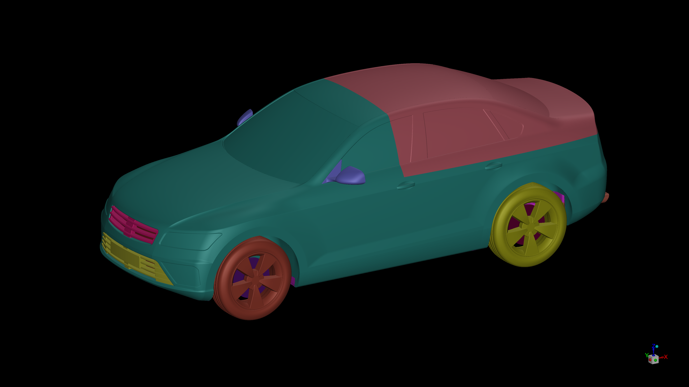

The problem
Integrating a fuel-cell system into a commercial vehicle required understanding radiator airflow across vehicle speeds, fan states and changes to the cooling arrangement.
VEHICLE CFD / EXTERNAL & UNDERHOOD FLOW
The flow around a vehicle also affects the air available to its cooling system. This study connects rear-end geometry and wake behavior with airflow through the radiator and engine bay.
Independent demonstration · In development
Geometry preparation and meshing are underway. Numerical results will be added as the study progresses.

Alberto Brambila, PhD · Professional experience in full-vehicle CFD, underhood airflow, geometry preparation and engineering interpretation.
PROFESSIONAL PROJECT / VEHICLE THERMAL INTEGRATION
Integrating a fuel-cell system into a commercial vehicle required understanding radiator airflow across vehicle speeds, fan states and changes to the cooling arrangement.
I developed and executed the full-vehicle CFD workflow, from detailed geometry preparation to post-processing. Porous radiators and performance-based fan models connected external flow with underhood resistance.
I delivered radiator mass-flow data to the system-level thermal team, examined a blocked-radiator scenario and compared front-end pressures with Pitot measurements. Vehicle drag was also calculated.
This experience belongs to the professional project. AeroSUV is a separate research geometry: the new demonstration does not reproduce that vehicle, its numerical results or its experimental comparisons.
01 / THE COMPARISON
The planned study compares estate, fastback and notchback rear ends with the same front end and cooling arrangement. The question is how the resulting pressure field and wake relate to aerodynamic forces and cooling flow.
Common front end
Common cooling setup
Common front end
Common cooling setup
Common front end
Common cooling setup
Compare drag and aerodynamic axle loads, then use pressure recovery and wake structure to explain differences. Consistent force references and averaging will matter as much as the contour images.
Represent radiator resistance and fan pressure rise, then measure airflow through the radiator and its exit paths. The surrounding pressure field and internal resistance jointly determine the flow.
The initial plan uses isothermal RANS, a porous radiator, a pressure-jump fan, a moving road and rotating-wall wheels. Final settings, fan characteristics and mesh checks are still pending. Rotating walls simplify wheel motion; they do not resolve rotating spoke passage.
The initial three-case matrix compares rear ends with a common cooling arrangement. It does not separately isolate the effect of switching the fan on or off. Radiator airflow alone is not a heat-rejection or component-temperature prediction.
02 / BUILD THE EVIDENCE
The next updates will add the actual mesh, final model choices and measured simulation outputs. No best rear end or improvement is claimed yet.
Confirm scale and configurations, preserve cooling passages, and document mesh quality and wall treatment.
Inspect force and flow histories, mass balance and numerical sensitivity before interpreting small differences.
Connect drag and axle loads to pressure and wake fields; connect radiator flow to wheelhouse and underbody discharge.
The professional experience behind this work transfers to vehicle integration, fan-and-radiator modeling, complex geometry preparation and communicating CFD inputs to system engineers. The AeroSUV example will make those methods inspectable as its evidence becomes available.
03 / SOURCE & ATTRIBUTION
AeroSUV was developed by FKFS and Röchling Automotive and distributed through ECARA. Geometry authorship belongs to its developers; preparation, simulation and interpretation will be documented separately as this study advances.
Zhang, C., Tanneberger, M., Kuthada, T., Wittmeier, F., Wiedemann, J., and Nies, J. (2019). Introduction of the AeroSUV—A New Generic SUV Model for Aerodynamic Research. SAE Technical Paper 2019-01-0646.
Official paper record ↗ · ECARA geometry and reference data ↗
Only the author-supplied geometry view is shown here. Literature results, future AeroSUV simulation results and professional project outcomes remain distinct. Original geometry downloads are obtained from the provider.
Project documentation and future implementation sources are maintained privately; reviewed figures and findings will be added here.